BESPOKE FURNITURE
นอกจากสินค้าแบรนด์ตัวเอง ASE รับงานสั่งผลิตตามแบบสำหรับโครงการโดยเฉพาะ ตั้งแต่การปรับขนาดและวัสดุจากรุ่นที่มีอยู่ ไปจนถึงขึ้นแบบใหม่ทั้งชิ้นจากแบบของสถาปนิกหรือนักออกแบบภายใน
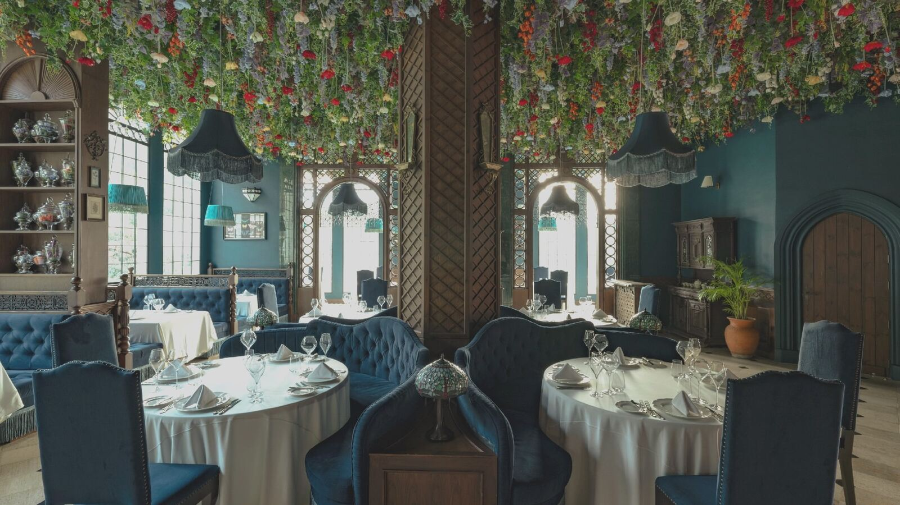
Khao Yai, Thailand
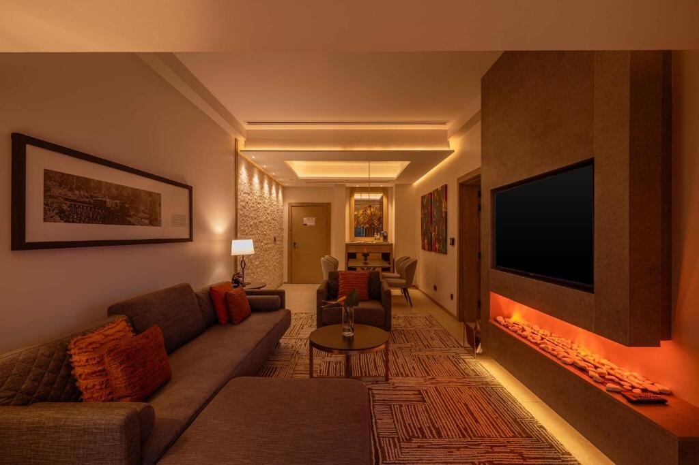
Kenya
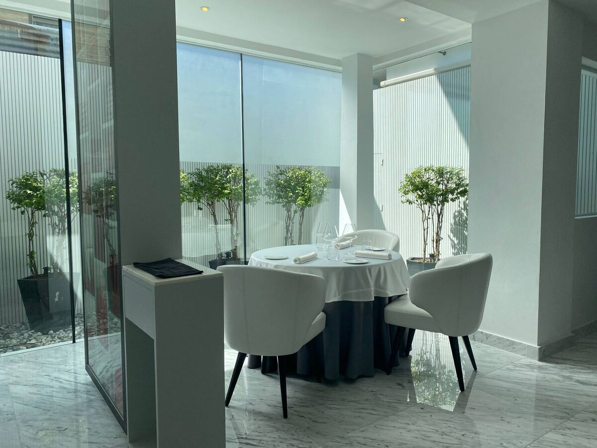
Bangkok, Thailand
ขอบเขตงานที่รับ
- โซฟา อาร์มแชร์ เบาะนั่ง หัวเตียง และงานบุนวมตามแบบ
- ปรับขนาด สัดส่วน และความแน่นเบาะ ให้เข้ากับผังพื้นที่จริง
- เลือกและจัดหาวัสดุหุ้ม รวมถึงผ้าและหนังเฉพาะที่โครงการกำหนด
- งานไม้ประกอบร่วม เช่น ชั้นวาง ตู้ และเคาน์เตอร์
- ผลิตซ้ำเป็นชุดสำหรับห้องพักจำนวนมาก โดยคุมสเปกให้เหมือนกันทุกห้อง
เหมาะกับ โรงแรมและรีสอร์ต ร้านอาหารและคาเฟ่ โครงการที่พักอาศัย ออฟฟิศ โรงพยาบาล และพื้นที่ commercial ที่ต้องการเฟอร์นิเจอร์เฉพาะตัว
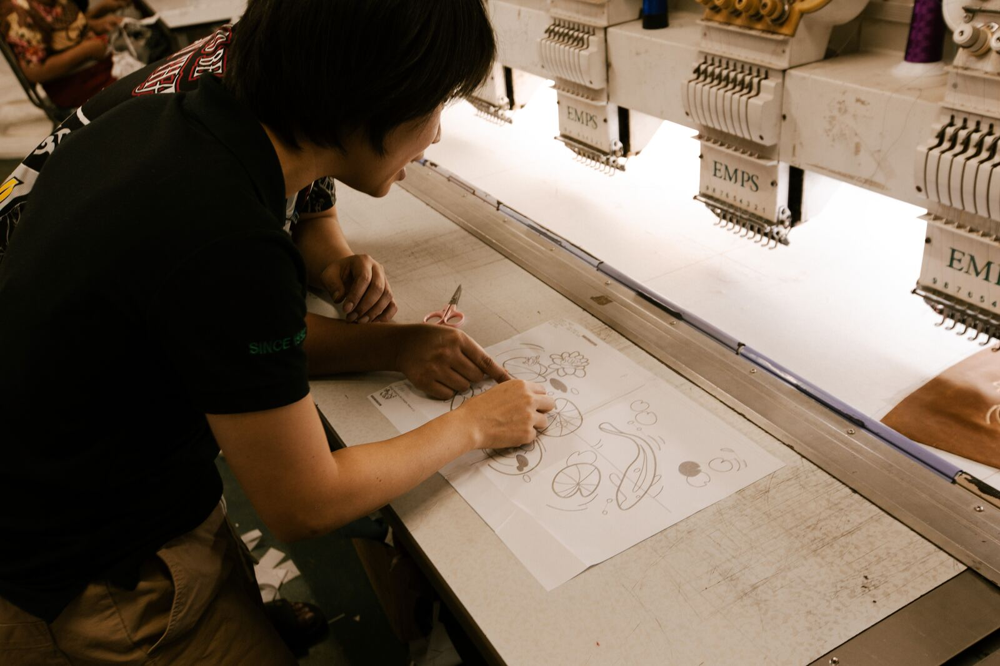

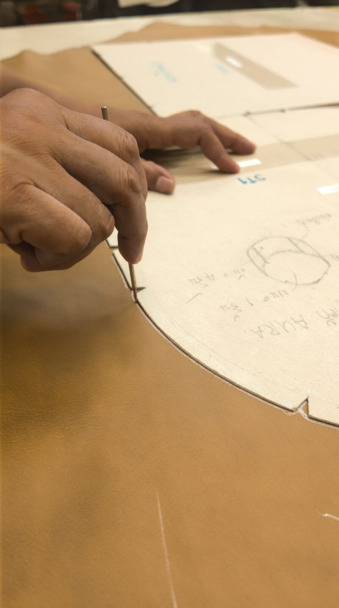
Maison Mystique
Khao Yai, Thailand
ภายในพื้นที่กว่า 40 ไร่ของ Maison Mystique ทุกห้องมีธีม มีเรื่องราว มีอารมณ์เฉพาะตัว เราออกแบบและผลิตเฟอร์นิเจอร์ให้สอดรับกับบรรยากาศของแต่ละห้อง โดยไม่ดึงความสนใจจากสิ่งรอบข้าง แต่ช่วยเติมเต็ม "สิ่งที่ห้องนั้นต้องการสื่อ"
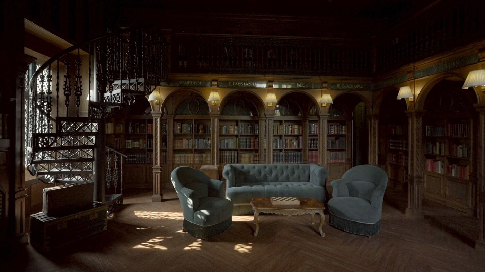
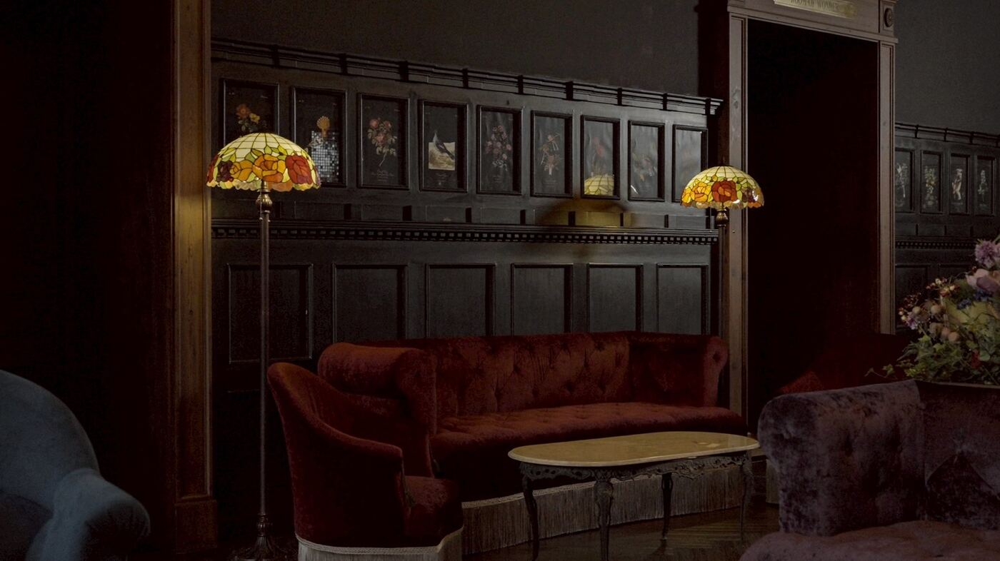
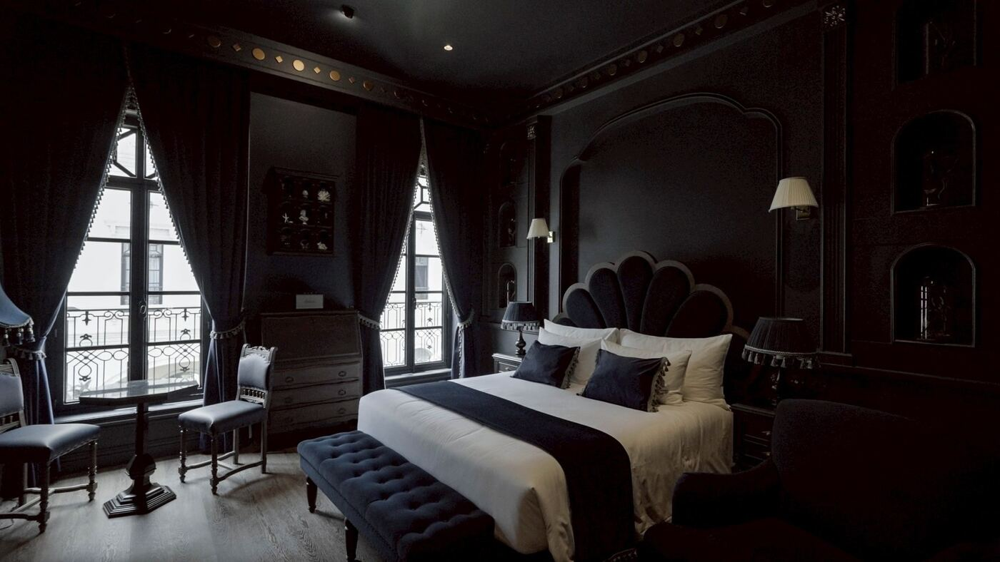
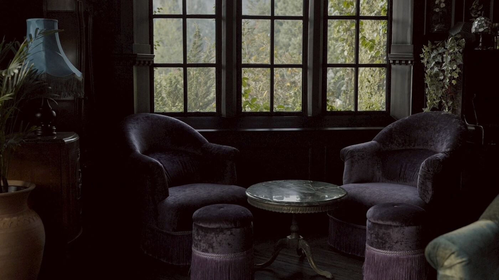
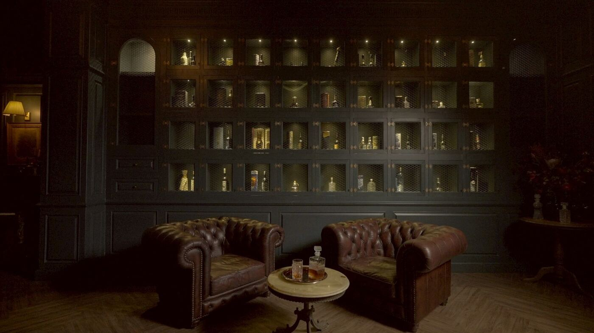
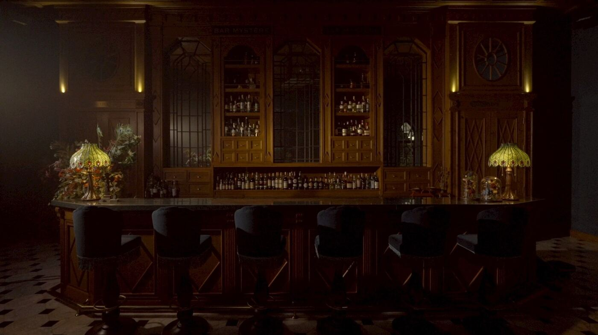
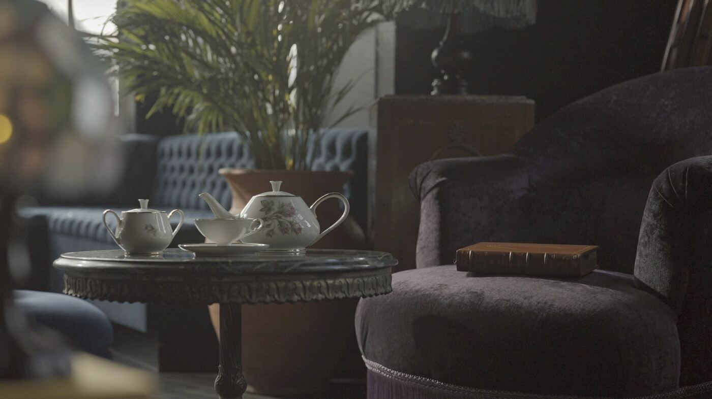